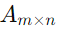
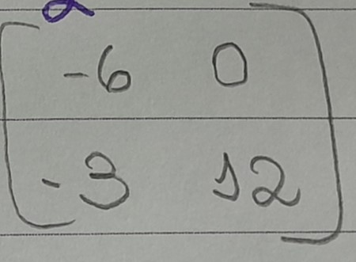
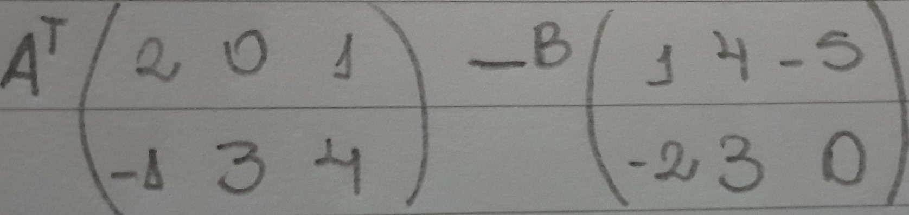
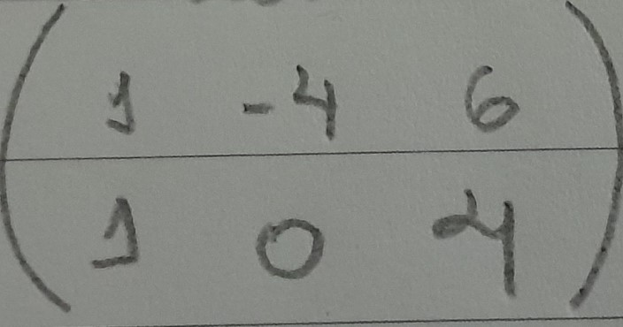

Voltar ao Início |
Auto-Avaliação |
Anuidades |
Amortização |
Determinantes |
Matrizes são uma tabela que vão organizar os valores.
Uma matrizé uma tabela com m linhas e n colunas.
como podemos na imagem temos a diagonal Principal e a Secundária
Matriz Diagonal: só existem elementos diferentes de 0 na diagonal principal
Matriz Identidade: Quando todos os elementos na diagonal são todos 1
Para somar duas matrizes A e B de mesma ordem, é só somar os elementos correspondentes C=A+B
Como podemos ver neste exemplo, -1 e -9 são correspondentes e vamos somá-los obtendo -9 que será o primeiro termo da fração resultante, e assim irá acontecer nos demais, veja abaixo:
Para subtrair duas matrizes A e B de mesma ordem, é só seguir o mesmo padrão que usamos para adição
Antes de entender como o cálculo deve ser feito, devemos entender o que é "Multiplicação Escalar" basicamente, é um número que fica do lado de fora da matriz e irá realizar uma Multiplicação com cada número dentro da Matriz
Como podemos ver, o -3 é o número escalar, entçao vamos multiplicar todos os valores por ele.
-3*2 = -6
-3*0 = 0
-3*0=-30
-3*1=-3
-3*-4=12
Para existir a multiplicação o número de colunas da primeira matriz, tem que ser igual ao número de
linhas da segunda matriz;
Deve-se pegar a primeira linha da primeira matriz e multiplicar por todas as colunas da segunda
matriz. Isso vai gerar os elementos da primeira coluna da nova matriz
Neste caso, pegando os elementos da matriz inicial, vamos montar as seguintes equações
2*1 + (-1)-(-1) + 2*3 +(-1)*2
0 * 1 + 3 *(-1) + 0*3 + 3*2
Depois de todos os cálculos realizados vamos obter este resultado
é basicamente trocar as linhas pelas colunas da matriz. Geralmente é visto em questões para calcular a matriz tranposta da A menos a matriz B.
Neste caso, a primeira coisa que devemos fazer é tornar a matriz A uma amtriz transposta
Com as matriz A transposta, podemos começar a fazer a subtração:
2-1 = 1
0-4= -4
1 - (-5)= 6
,
-1 - (-2) = 1
3 - 3 = 0
4 - 0 = 4
Sendo assim vai nos resultar no seguinte resultado
As imagens em telas de computadores ou televisões são formadas por pequenos pontos chamados pixels. Por exemplo, uma imagem com resolução de 800 x 600 possui 480.000 pixels organizados em 800 colunas e 600 linhas. Esses pixels podem ser vistos como Quando um programa gráfico altera a posição, reflete, rotaciona ou redimensiona a imagem, ele está modificando a posição dos pixels que a compõem. Essas alterações são realizadas por meio de operações com matrizes, conhecidas como transformações geométricas (ou transformações lineares).
Vai mudar de lugar dentro do gráfico
Envolve adição de Matriz
Para realizar a tradução de uma figura, soma-se uma coluna matriz que representa os vértices da
figura a uma coluna que modifica a posição desses vértices. Para deslocar a figura em 𝑎 unidades no
eixo xe 𝑏 unidades no eixo y, utilize-se a matriz [ 𝑎 𝑏
Precisa de uma multiplicação por escala
uma matriz de coordenadas é multiplicada por um fator de escala que pode alterar o tamanho dos
objetos representados por essa matriz.
Na reflexão de Matriz, ela vai refletir o desenho do gráfico, como se fosse um espelho
Envolve sen e cos
Na rotação de Matriz, ela vai girar em torno de im ponto fixo, geralmente a origem do sistema de coordenadas
Voltar ao Início |
Auto-Avaliação |
Anuidades |
Amortização |
Matrizes |
Determinantes |